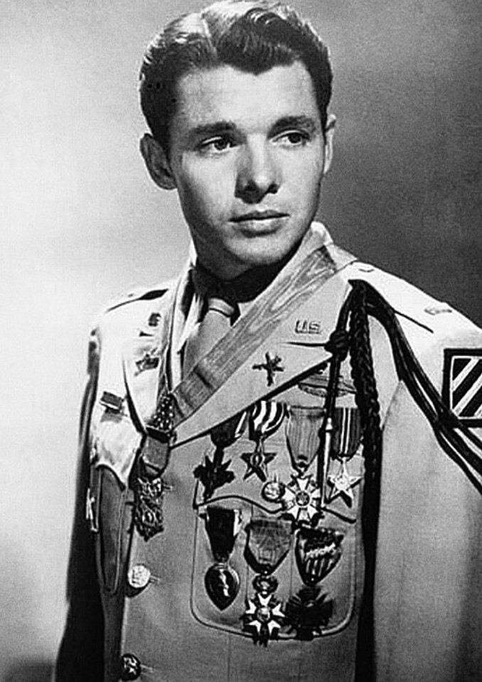

Audie Murphy en uniforme de l’US Army, décorations visibles, portrait d’après-guerre (vers 1948).
Nom : Audie Leon Murphy
Dates : 20 juin 1925 – 28 mai 1971
Nationalité : Américaine
Arme : US Army
Spécialité : Infanterie
Audie Murphy est considéré comme le soldat américain le plus décoré de la Seconde Guerre mondiale. Issu d’un milieu très modeste, il s’engage jeune et se distingue par un courage exceptionnel sur les fronts d’Italie, de France et d’Allemagne.
Son nom devient rapidement un symbole du combattant de première ligne, exposé en permanence au feu et aux risques les plus élevés.
Murphy participe aux campagnes de Sicile, d’Italie, du Sud de la France et d’Allemagne. Il reçoit de nombreuses décorations américaines et françaises pour bravoure au combat.
Son acte le plus célèbre a lieu près de Holtzwihr, en Alsace, en janvier 1945 : seul, blessé, il retient une attaque allemande en utilisant un char en feu comme position de tir.
Pour cet acte, il reçoit la Medal of Honor, la plus haute distinction militaire américaine.
Après la guerre, Audie Murphy devient acteur à Hollywood et joue dans de nombreux films, dont To Hell and Back, où il interprète son propre rôle.
Il reste marqué par ses expériences de combat et souffre de troubles liés au stress de guerre. Il meurt dans un accident d’avion en 1971 et est enterré au cimetière national d’Arlington.
Audie Murphy incarne la figure du soldat de terrain, exposé en première ligne et reconnu pour son courage exceptionnel. Son parcours est souvent utilisé pour illustrer la réalité des combats et les conséquences humaines de la guerre.